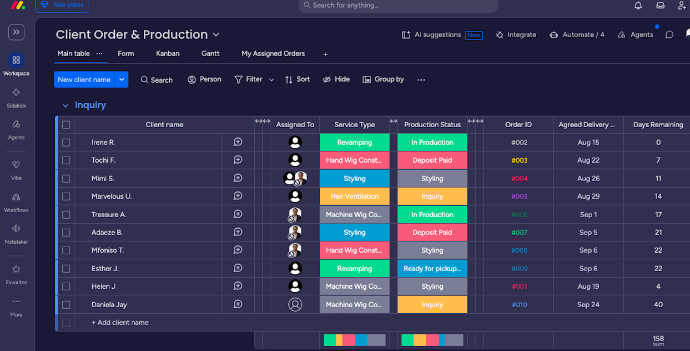
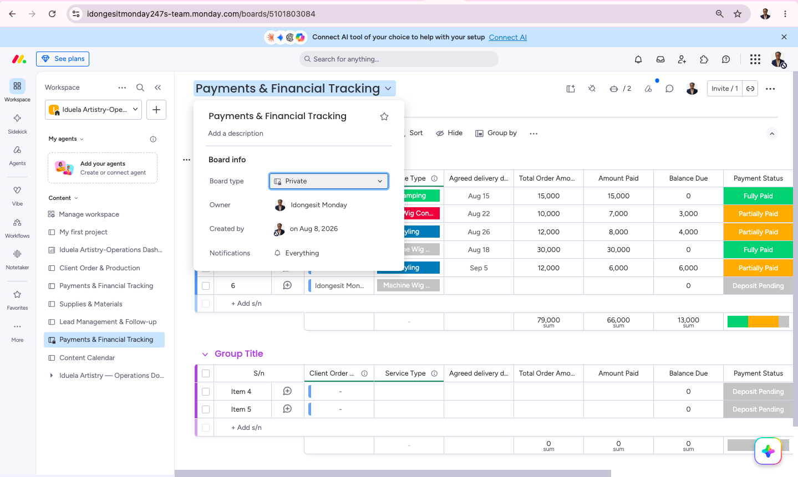
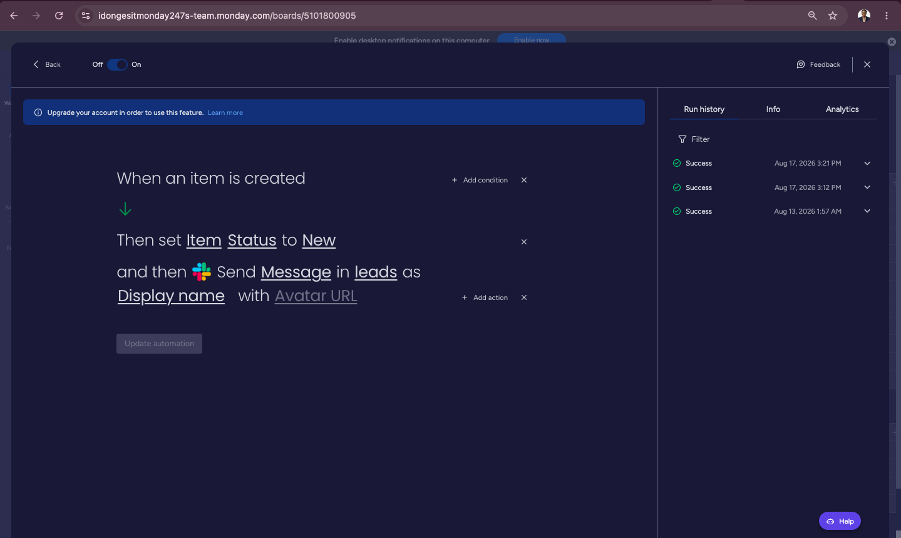
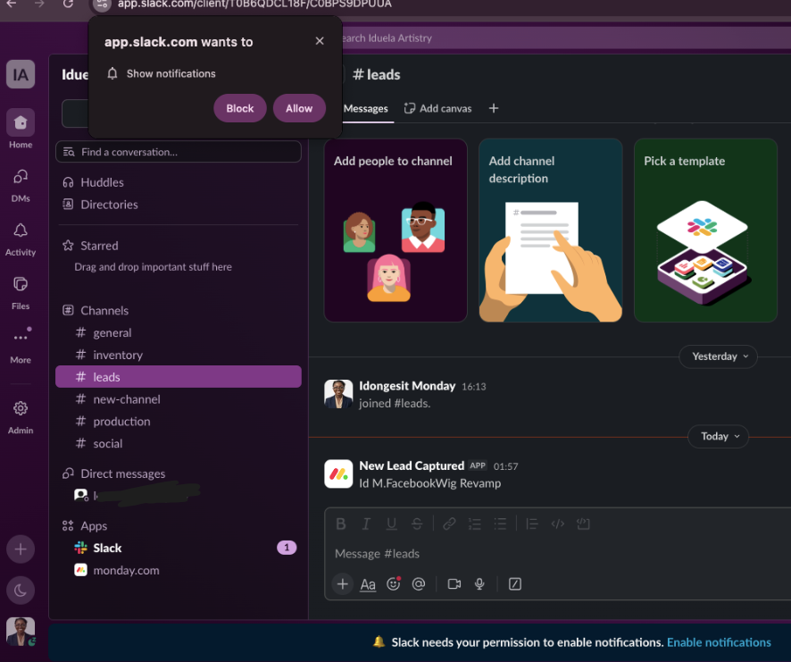
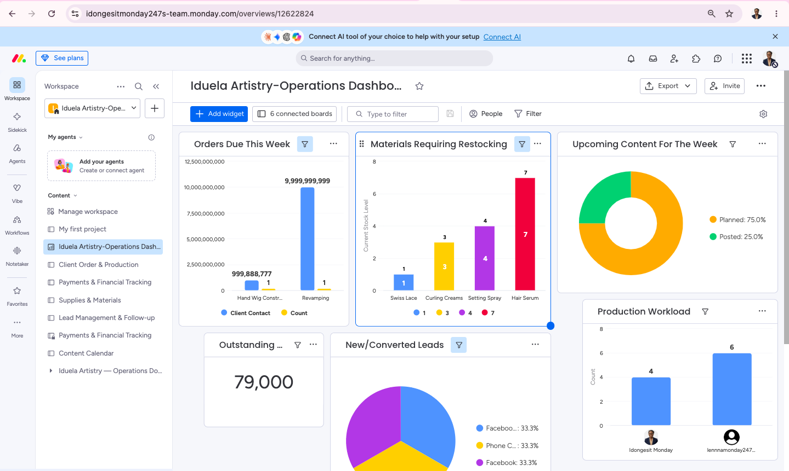
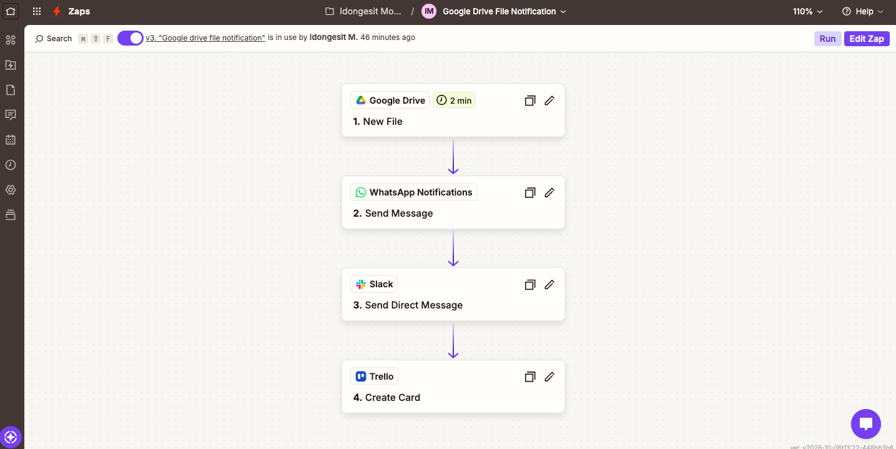

The situation
For three years I ran Iduela Artistry on my own, handling inquiries, measurements, payments, materials, production, styling, client messages and promotion. All of it was tracked in a physical notebook. That caused real problems: orders at different stages were hard to track, delivery dates were at risk, deposits and balances were hard to follow, materials ran low mid-order, and Facebook leads could be forgotten. It would also have broken down the moment I hired help.
My role
I designed the operations system and its automations, and I built it with future staff in mind.
The approach
- One connected workspace, five boards: Orders and Production, Supplies and Materials, Lead Management and Follow-Up, Content Calendar, and a restricted Payments board.
- Separated sensitive information from daily work. A wig maker needs the client's specifications and deadline, but not the order value or balance, so payment details live on a restricted board that stays linked to each order.
- Forms that create records automatically: an inquiry form creates a new order with status Inquiry, and a lead form creates a new lead with status New.
- Six board automations: a delivery deadline reminder, a ready-order notification, a deposit-only reminder two days before delivery, a low-stock alert, a lead follow-up reminder after three days without an update, and an assignment notification for team members.
- A lead-to-order workflow: when a lead converts, the order is created automatically and stays linked to the original lead.
- Slack as the alert layer: new leads, production deadlines and low-stock alerts post to dedicated channels, so nobody has to keep checking the board.
- An operations dashboard showing orders due this week, outstanding balances (management only), materials to reorder, unconverted leads, team workload and upcoming content.
- A separate Zapier automation that creates a Trello card whenever a file arrives in Google Drive, so a routine step happens without anyone remembering it.
The result
The owner can see every order and its stage at a glance, deadlines and unpaid balances surface before they become problems, and leads no longer depend on memory. I tested each automation with sample data and all of them triggered as designed.
What I'd do next
Add payment reminders and client status updates, so even more of the routine communication runs without manual effort, and compare how the same workflow runs in other project management tools, such as ClickUp or Asana, to show tool judgment.
Screenshots





